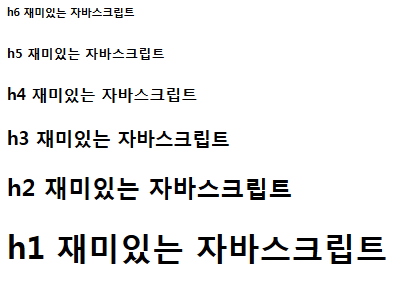

--제어문에는 반복문, 조건문, 선택문이 있다.
반목문이란 주어진 조건에 따라서 문장을 반복 실행하게 해준다.
자바 스크립트에서 반복문은 for문, while문, do while문이 있다
for (초기값; 최종값(조건식); 증감식)
사용예) 특정 문자열을 400번 반복해서 화면에 출력
<script language="javascript">
//<![CDATA[
for(i=1;i<=400;i++)
document.write("사랑해")
//]]>
</script>
for 문을 이용하여 <h>태그를 사용하여 h1~h6까지의 태그 결과물을 내용은 재미있는 자바스크립트를 나타내시오

사용예) 구구단 출력
<script>
//<![CDATA[
for(var i=2; i<=9;i++){
document.write("<h1>"+i+"단 </h1> ");
for(var k=1;k<=9;k++){
document.write(i+"x"+k+"="+i*k,"<br/>");
}
}
//]]>
</script>
반복문의 실행문들은 수행과정에서 break문을 만나면 해당 반복문을 종료합니다, 즉 break문은 반복문을 정지시킬 때에 사용합니다.
사용예)
<script> //<![CDATA[ for(var i=2; i<=9;i++){ document.write("<h1>"+i+"단 < /h1 > "); } //]]> </script>
while(반복문): '~하는 동안'
{
A
}
B ; 조건문이 참이면 A를 실행하고 조건문이 거짓이면 B를 실행
사용예)1부터 10까지 반복
<script> //<![CDATA[ var i=1;//초기값 while(i<=10){ document.write(i+"<br />"); i++; } //]]> </script>
while문을 이용하여 10부터 1까지 내림차순으로 2의 배수(짝수)만 출력해 보세요.
사용예) 1부터 10까지의 합 계산
<script>
//<![CDATA[x=0
total=0
while(x<10)
{
x++
total=total+x
document.write(x)
if(x!=10)
document.write("+")
}
document.write("="+ total)
//]]>
</script>
while문을 이용하여 구구단 중 5단을 출력해보세요
WHILE문은 조건을 확인한 후에 문장을 실행하지만, DO WHILE문은 실행한 다음 조건을 확인하도록 해주는 반복문이다. 그러므로 DO WHILE문은 조건에 상관없이 반복 문장을 최소 한번은 실행하게 된다.
do
{ A }
while (조건)
B
사용예) 1부터 10까지의 합 계산
<script language="javascript">
//<![CDATA[
x=0
total=0
do
{
x++
total=total+x
document.write(x)
if(x!=10)document.write("+")
}
while(x<10)
document.write("="+ total)
//]]>
</script>
<script>
//<![CDATA[
var i=1;//초기값
while(i<=9){
document.write("5X"+i+"="+i*5+"<br />");
i++;
}
//]]>
</script>
반복문 문장 안에 사용하여 반복 실행 중에 조건문으로 되돌아 가게 해주는 역활을 한다.
즉, 반목문에서 특정 부분을 실행하지 않게 하고 싶을 때 간단하게 사용할 수 있다.
사용예) 1부터 10까지의 수중에서 3을 제외한 수의 합을 계산
<script language="javascript">
//<![CDATA[
x=0
total=0
while(x<10)
{
x++
if(x==3) continue
total=total+x
document.write(x)
if(x!=10)
document.write("+")
}
document.write("="+ total)
//]]>
</script>
<script src="js라는 확장자를 가진 외부파일"></script>
주의) 외부 파일을 작성할 경우 외부 파일에 <script>태그를 입력하지 않는다.
문제) 1부터 10까지의 합을 계산 결과와 함께 for문으로 나타내 보세요.
예) 1+2+3+4+5+6+7+8+9+10=55